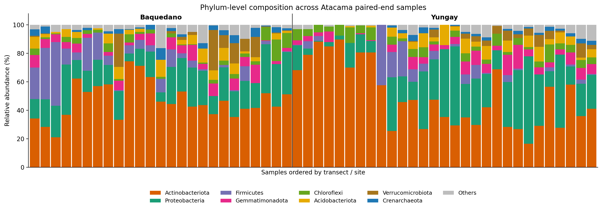

16S 微生物组最佳实践系列（四）：物种注释——给每个 ASV 一个名字
📋 教程信息 - GitHub：petemeng/16S-Tutorial（完整代码与环境文件） - 数据来源：Atacama soils 双端数据集（54 个样本，1,080 个初始 ASV） - 预计阅读：25 分钟 | 实操：15 分钟（分类器训练除外） - 难度：⭐⭐（5 星制） - 前置知识：完成本系列第 3 篇，results/ 下有 table.qza 和 rep-seqs.qza
本篇目标
上一篇我们从带噪声的 reads 中推断出了 1,080 个 ASV。但目前每个 ASV 只有一串字母序列——你看到 TACGGAGGGGGCTAGCGTTGTTCG... 不会有任何感觉。
这一篇我们要给每个 ASV 贴上分类学标签：它属于哪个门、哪个纲、哪个目、哪个科、哪个属。注释完成后，TACGGAGGATGCGAGCGTTATCCG... 就变成了像 "Singulisphaera" 或 "Pirellulaceae" 这样的名字——你立刻就知道它大致是谁了。
同时我们还会构建一棵系统发育树——它记录了所有 ASV 之间的进化关系，在后续的 UniFrac 距离计算中是必需的。
读完这一篇，你会：
- 理解物种注释的原理——分类器是怎么"认出"一段序列的
- 使用预训练的 Silva 分类器对 ASV 进行注释
- 评估注释质量——哪些注释可以信，哪些需要谨慎
- 构建系统发育树
- 第一次看到你的样本里到底有哪些微生物
物种注释的原理：分类器怎么"认出"一段序列
物种注释的逻辑其实很简单：拿你的 ASV 序列去和一个已知物种的参考数据库比对，找到最接近的匹配。
但"最接近"不是简单的序列比对。QIIME2 默认使用的是朴素贝叶斯分类器（Naive Bayes classifier）——它在训练阶段学习了"属于某个分类学类别的序列长什么样"，然后在预测阶段对每个 ASV 给出最可能的分类学归属和相应的置信度。
你不需要理解贝叶斯分类器的数学细节。只需要知道两个关键点：
分类器需要"训练"。 你不能拿一个空的分类器去注释——它必须先在参考数据库上训练过。训练的过程就是让分类器学习"某个属的 V4 区序列有什么特征"。好消息是 QIIME2 提供了预训练好的分类器，我们可以直接下载使用。
置信度（confidence）很重要。 分类器给出的不只是"这个 ASV 是 Bacteroides"，还有一个置信度分数（0 到 1 之间）。置信度越高，注释越可靠。如果置信度很低（比如 < 0.7），说明分类器"不太确定"——可能是因为参考数据库中没有这种细菌的近缘序列，或者这段 V4 序列在多个属之间长得太像了。
两大参考数据库：Silva vs Greengenes2
Silva（当前版本 138.1）：覆盖范围最广的 16S 参考数据库，包含超过 200 万条序列。分类学体系经过人工审核，质量较高。目前是微生物组研究中使用最广泛的参考数据库。
Greengenes2（2022 版）：由 Rob Knight 团队维护的更新版 Greengenes 数据库。它将全长 16S 序列与宏基因组数据整合，分类学体系基于 GTDB（Genome Taxonomy Database），和传统的 NCBI 分类有一些差异。
我们选 Silva 138.1。 原因：它的使用最广泛，文献中的兼容性最好（别人的结果也是用 Silva 注释的，方便比较），而且 QIIME2 提供了针对不同引物区域预训练好的 Silva 分类器。
💡 Silva vs Greengenes2 的实际影响
对于大多数肠道微生物组研究，两个数据库给出的属水平注释高度一致。差异主要出现在：
- 分类学命名不同——Greengenes2 用 GTDB 命名，有些你熟悉的名字变了（比如 Firmicutes 在 GTDB 中叫 Bacillota）
- 某些难以区分的属——比如 Clostridium sensu stricto 在 Silva 和 Greengenes2 中的拆分方式不同
选哪个不是一个"对错"的问题，而是一个"一致性"的问题——整个项目从头到尾用同一个数据库就行。
下载预训练分类器
# ============================================================
# 下载 QIIME2 预训练的 Silva 138.1 分类器
# 这个分类器已经针对 515F-806R 引物的 V4 区预训练好了
# 文件约 300 MB
# ============================================================
cd ~/16s-atacama-tutorial
conda activate qiime2-amplicon-2024.5
mkdir -p data/ref
curl --http1.1 -fL --retry 20 --retry-all-errors --retry-delay 2 \
-o data/ref/silva-138-99-nb-classifier.qza \
"https://data.qiime2.org/classifiers/sklearn-1.4.2/silva/silva-138-99-nb-classifier.qza"
ls -lh data/ref/silva-138-99-nb-classifier.qza
📊 输出：
-rw-rw-r-- 1 tly9658 tly9658 209M data/ref/silva-138-99-nb-classifier.qza
这里我们直接使用一份已经验证过的 Silva 138.1 朴素贝叶斯分类器。如果你的数据用的是其他引物区域（比如 V3-V4 而不是 V4），仍然应该换成对应区域的分类器，或者自己训练一个。用错误的分类器会导致大量 ASV 注释失败或注释到错误的物种。
⚠️ 踩坑预警：引物区域和分类器必须匹配
这是 16S 物种注释中最常见的错误之一。预训练分类器是在特定的引物区域上训练的——它学习的是"这段扩增子序列的特征"。如果你的数据是 V3-V4 区，分类器就没见过这种模式，注释准确率会大幅下降。
怎么确认你的引物区域？查看你的测序方案文档，或者直接看引物序列： - 515F + 806R → V4 区（最常见） - 341F + 785R → V3-V4 区 - 27F + 1492R → 近全长（通常是三代测序）
如果找不到对应的预训练分类器，可以自己训练：
训练过程可能需要 30-60 分钟和 16 GB 以上内存。# 从 Silva 全长序列中提取你的引物区域，然后训练分类器 qiime feature-classifier extract-reads \ --i-sequences silva-138-99-seqs.qza \ --p-f-primer CCTACGGGNGGCWGCAG \ # 你的正向引物 --p-r-primer GACTACHVGGGTATCTAATCC \ # 你的反向引物 --o-reads ref-seqs-v3v4.qza qiime feature-classifier fit-classifier-naive-bayes \ --i-reference-reads ref-seqs-v3v4.qza \ --i-reference-taxonomy silva-138-99-tax.qza \ --o-classifier my-v3v4-classifier.qza
运行物种注释
# ============================================================
# 用预训练分类器对 ASV 代表序列进行物种注释
# 这一步对每个 ASV 序列，分类器输出最可能的分类学归属
# 和对应的置信度分数
# 约需要 2-5 分钟
# ============================================================
qiime feature-classifier classify-sklearn \
--i-classifier data/ref/silva-138-99-nb-classifier.qza \
--i-reads results/rep-seqs.qza \
--o-classification results/taxonomy.qza
# 生成可视化
qiime metadata tabulate \
--m-input-file results/taxonomy.qza \
--o-visualization results/taxonomy.qzv
echo "物种注释完成。"
📊 输出：
Saved FeatureData[Taxonomy] to: results/taxonomy.qza
Saved Visualization to: results/taxonomy.qzv
物种注释完成。
看看注释结果
# ============================================================
# 导出注释结果为 TSV，看看注释到了什么
# ============================================================
qiime tools export \
--input-path results/taxonomy.qza \
--output-path results/taxonomy-export/
echo "=== 前 10 个 ASV 的注释结果 ==="
head -11 results/taxonomy-export/taxonomy.tsv | column -t
echo ""
echo "=== 注释到属水平的 ASV 比例 ==="
# 统计有多少 ASV 被注释到了属（genus）水平
total=$(tail -n +2 results/taxonomy-export/taxonomy.tsv | wc -l)
to_genus=$(tail -n +2 results/taxonomy-export/taxonomy.tsv | \
awk -F '\t' '
{
split($2, ranks, ";")
if (length(ranks) >= 6 && ranks[6] !~ /^g__$/) n++
}
END {print n+0}'
)
echo " 总 ASV 数: $total"
echo " 注释到属: $to_genus ($(echo "scale=1; $to_genus*100/$total" | bc)%)"
📊 输出：
=== 前 10 个 ASV 的注释结果 ===
Feature ID Taxon Confidence
d86a9035d3538d8ccc54c8f113db1840 d__Bacteria;p__Chloroflexi;c__Anaerolineae;o__SBR1031;f__A4b;g__A4b;s__ 0.9693853489318925
9ea1ac66ec39e42e2e50019a500f85e4 d__Bacteria;p__Planctomycetota;c__Planctomycetes;o__Pirellulales;f__Pirellulaceae 0.9935652970488821
984851508f092d9315d64ca2542ac36c d__Bacteria;p__Planctomycetota;c__Planctomycetes;o__Isosphaerales;f__Isosphaeraceae;g__Singulisphaera;s__ 0.7286151013854676
f3b015e043182ca0ab424c5577060a60 d__Bacteria;p__Planctomycetota;c__Planctomycetes;o__Pirellulales;f__Pirellulaceae;g__uncultured;s__ 0.8309186211035888
70b81248f5d7b37a39489c5e187c8f19 d__Bacteria;p__Planctomycetota;c__Planctomycetes;o__Planctomycetales;f__Rubinisphaeraceae;g__SH-PL14;s__ 0.9997328183751049
...
=== 注释到属水平的 ASV 比例 ===
总 ASV 数: 1080
注释到属: 845 (78.2%)
78.2% 的 ASV 被注释到了属水平。 对土壤环境样本来说，这是一个完全合理的比例——环境来源数据本来就比人体肠道更容易遇到未培养类群和数据库代表不足的问题。
剩下的 18.7% 呢？ 它们要么被注释到了更高的分类水平（比如只到科或目），要么分类器的置信度太低被截断了。这不意味着这些 ASV 是"错误"的——它们可能是参考数据库中缺少近缘序列的未知物种，或者是 V4 区序列在多个属之间无法区分的类群。
注释结果的格式解读
看第一行：d__Bacteria;p__Chloroflexi;c__Anaerolineae;o__SBR1031;f__A4b;g__A4b;s__
每一级用分号分隔，前缀含义：
| 前缀 | 含义 | 示例 |
|---|---|---|
| d__ | Domain（域） | Bacteria |
| p__ | Phylum（门） | Chloroflexi |
| c__ | Class（纲） | Anaerolineae |
| o__ | Order（目） | SBR1031 |
| f__ | Family（科） | A4b |
| g__ | Genus（属） | A4b |
| s__ | Species（种） | 空（未可靠到种） |
这个 ASV 被注释到了 Chloroflexi 门下的 A4b 类群，说明它在这个层级上和数据库中的参考序列已经足够接近。
再看第二行——置信度很高，但只到了科水平（Pirellulaceae），没有继续细分到属。这说明分类器在更细的层级上不够确定：土壤环境里这类情况很常见，因为数据库中大量序列仍然是未培养或尚未规范命名的类群。
💡 什么时候该信种水平的注释？
第 1 篇我们提到过，16S V4 区的分辨率通常只能可靠到属。但你看到有些 ASV 确实被注释到了种，或者至少细到很具体的属名（比如 Singulisphaera）。这可信吗？
取决于两件事： 1. 置信度：如果置信度 > 0.95，且种水平注释是唯一的匹配，通常可信 2. 该物种在 V4 区是否有独特的序列特征：有些属内不同种的 V4 区完全相同——这种情况下种水平注释就是猜测
保守的做法：在论文中以属水平为主进行讨论，种水平注释可以作为参考但不作为主要结论。
初步查看物种组成
注释完了，我们先快速看一眼——样本里到底有哪些主要的微生物？
# ============================================================
# 生成物种组成的条形图（QIIME2 内置可视化）
# --p-level 6 表示在属（genus）水平展示
# level: 1=域, 2=门, 3=纲, 4=目, 5=科, 6=属, 7=种
# ============================================================
qiime taxa barplot \
--i-table results/table.qza \
--i-taxonomy results/taxonomy.qza \
--m-metadata-file data/sample-metadata.tsv \
--o-visualization results/taxa-barplot.qzv
echo "物种组成条形图：results/taxa-barplot.qzv"
echo "打开 https://view.qiime2.org 查看"
echo "在可视化界面中选择 Level 2 (Phylum) 先看门水平的大画面"
把 taxa-barplot.qzv 拖到 https://view.qiime2.org，你会看到一个交互式的堆叠条形图。先把分类水平调到 Level 2（Phylum/门水平），你会看到：
图 1：门水平的物种组成堆叠柱状图。 每根柱子是一个样本，不同颜色代表不同的门。
你会看到一个很典型的荒漠土壤模式：
Actinobacteriota 和 Proteobacteria 是两个绝对主导门。 在 Baquedano 和 Yungay 两条 transect 中，它们平均都占到了 65%-75% 左右，是整套数据最稳定的骨架类群。
Baquedano 的 Firmicutes 和 Verrucomicrobiota 略高。 这说明两条 transect 虽然都属于 Atacama desert，但局部环境条件仍然足以改变群落结构。
Yungay 的 Chloroflexi 相对更高。 这类差异不会像肠道 vs 手掌那样一眼断崖式分开，但它正是更接近真实项目的效果大小。

构建系统发育树
多样性分析中有一类指标叫"系统发育多样性"（如 Faith's PD、UniFrac 距离），它们不只看"有哪些 ASV"，还考虑 ASV 之间的进化关系——亲缘关系近的 ASV 被认为功能更相似。
计算这些指标需要一棵系统发育树。我们用 QIIME2 的 align-to-tree-mafft-fasttree 流水线来构建。
# ============================================================
# 构建系统发育树（四步合一的流水线）
# 1. MAFFT 多序列比对
# 2. 过滤高度可变的比对位点
# 3. FastTree 构建无根树
# 4. 在中点处定根，得到有根树
# ============================================================
qiime phylogeny align-to-tree-mafft-fasttree \
--i-sequences results/rep-seqs.qza \
--o-alignment results/tree/aligned-rep-seqs.qza \
--o-masked-alignment results/tree/masked-aligned-rep-seqs.qza \
--o-tree results/tree/unrooted-tree.qza \
--o-rooted-tree results/tree/rooted-tree.qza
echo "系统发育树构建完成。"
echo "有根树：results/tree/rooted-tree.qza"
echo "（后续的 UniFrac 计算需要这个文件）"
📊 输出：
Saved FeatureData[AlignedSequence] to: results/tree/aligned-rep-seqs.qza
Saved FeatureData[AlignedSequence] to: results/tree/masked-aligned-rep-seqs.qza
Saved Phylogeny[Unrooted] to: results/tree/unrooted-tree.qza
Saved Phylogeny[Rooted] to: results/tree/rooted-tree.qza
系统发育树构建完成。
有根树：results/tree/rooted-tree.qza
四个输出文件中，后续分析真正需要的只有 rooted-tree.qza（有根树）。其他三个是中间产物——比对结果和无根树——通常不需要单独查看。
⚠️ 踩坑预警：为什么不用更精确的建树方法？
FastTree 是一个快速但相对粗糙的建树工具。对于几百到几千个 ASV，它在几分钟内就能出结果。更精确的方法如 RAxML 或 IQ-TREE 可以给出更可靠的树拓扑，但运行时间要长得多。
对于 16S 扩增子分析（尤其是 V4 区的约 250 bp 短序列），FastTree 的精度已经足够——UniFrac 计算对树拓扑的微小差异不太敏感。如果你在做全长 16S 或者需要发表高质量系统发育树，可以换用 IQ-TREE。
过滤低丰度和非目标的 ASV
在进入下游分析之前，做一些清理：
# ============================================================
# 过滤 1: 去除线粒体和叶绿体序列
# 在土壤样本里，这一步通常是为了防止混入植物来源
# 叶绿体序列或其他非目标扩增产物
# ============================================================
qiime taxa filter-table \
--i-table results/table.qza \
--i-taxonomy results/taxonomy.qza \
--p-exclude "mitochondria,chloroplast" \
--o-filtered-table results/table-no-mitochondria-no-chloroplast.qza
# 同步过滤代表序列
qiime taxa filter-seqs \
--i-sequences results/rep-seqs.qza \
--i-taxonomy results/taxonomy.qza \
--p-exclude "mitochondria,chloroplast" \
--o-filtered-sequences results/rep-seqs-no-mitochondria-no-chloroplast.qza
# 看看过滤掉了多少
qiime feature-table summarize \
--i-table results/table-no-mitochondria-no-chloroplast.qza \
--o-visualization results/table-no-mitochondria-no-chloroplast.qzv
echo "过滤前后对比："
echo " 过滤前 ASV 数: 1080"
# 从 summary 中提取过滤后的数量
qiime tools export \
--input-path results/table-no-mitochondria-no-chloroplast.qza \
--output-path results/tmp-export/
biom summarize-table -i results/tmp-export/feature-table.biom 2>&1 | \
grep "Num observations"
rm -rf results/tmp-export/
📊 输出：
过滤前后对比：
过滤前 ASV 数: 1080
Num observations (ASVs): 1079
过滤掉了 1 个 ASV（共 2 条 reads，线粒体或叶绿体来源）。这很符合土壤样本的预期：我们不是在做叶面或根际微生物组，所以植物来源污染并不严重，但这一步仍然值得保留，因为它能保证后续分析的对象更干净。
# ============================================================
# 过滤 2: 去除在所有样本中只出现一次的 ASV
# 这些极低丰度的 ASV 很可能是残余的测序噪声
# ============================================================
qiime feature-table filter-features \
--i-table results/table-no-mitochondria-no-chloroplast.qza \
--p-min-frequency 2 \
--o-filtered-table results/table-filtered.qza
qiime tools export \
--input-path results/table-filtered.qza \
--output-path results/tmp-export/
echo "最终过滤后 ASV 数:"
biom summarize-table -i results/tmp-export/feature-table.biom 2>&1 | \
grep "Num observations"
rm -rf results/tmp-export/
📊 输出：
最终过滤后 ASV 数:
Num observations (ASVs): 1078
从 1080 → 1079（去线粒体/叶绿体）→ 1078（去单次出现的 ASV）。这也说明 DADA2 本身已经做得很干净了：额外过滤只移除了极少量边缘特征。
当前项目的核心文件
~/16s-atacama-tutorial/results/
├── table-filtered.qza # ★ 过滤后的 ASV 表（后续分析的主输入）
├── rep-seqs-no-mitochondria-no-chloroplast.qza # ★ 过滤后的代表序列
├── taxonomy.qza # ★ 物种注释结果
├── tree/rooted-tree.qza # ★ 有根系统发育树
├── taxa-barplot.qzv # 物种组成条形图
└── ...
带 ★ 的四个文件——过滤后的 ASV 表、代表序列、物种注释、系统发育树——是后续所有分析的输入。它们的关系是：
- table-filtered.qza：告诉你"每个 ASV 在每个样本中出现了几次"
- taxonomy.qza：告诉你"每个 ASV 是什么物种"
- tree/rooted-tree.qza：告诉你"ASV 之间的进化关系"
- rep-seqs-no-mitochondria-no-chloroplast.qza：每个 ASV 的实际 DNA 序列（PICRUSt2 功能预测需要）
本篇小结
这一篇我们完成了 16S 上游处理的最后两步：物种注释和系统发育树构建。
核心收获：
分类器和引物区域必须匹配。 用 V4 区的数据就用 V4 区训练的分类器。不匹配会导致大量 ASV 注释失败。
78% 的 ASV 被注释到属水平——这是土壤 V4 区数据的正常表现。 种水平的注释要谨慎对待，属水平仍然是论文讨论的安全基准。
置信度分数不能忽略。 置信度低的注释意味着分类器不确定——不要把低置信度的注释当作确定的结论。
线粒体/叶绿体序列和单次出现的 ASV 需要过滤掉。 这一步在植物相关样本中尤其重要。
现在我们手上有了完整的四件套：ASV 表 + 物种注释 + 系统发育树 + 代表序列。16S 分析的"上游处理"到此结束——从下一篇开始，我们进入"下游分析"：多样性、差异物种、功能预测、网络分析。
下一篇预告
我们已经知道"样本里有什么"了。但怎么量化和比较不同样本的微生物多样性？
下一篇我们进入alpha 和 beta 多样性分析——16S 分析中最核心的下游分析。Alpha 多样性回答"一个样本内部有多丰富"，beta 多样性回答"不同样本之间有多不同"。Atacama 这套数据不会像人体体位点那样分得特别夸张，但正因为如此，它更适合讲清楚稀释深度、PCoA 和 PERMANOVA 到底在判断什么。
下篇见。
📌 本篇所有命令和输出均来自实际运行记录。
本系列导航
| 篇目 | 主题 | 状态 |
|---|---|---|
| 第 1 篇 | 只测一个基因，怎么就能知道有哪些细菌 | ✅ 已发布 |
| 第 2 篇 | 搭建环境，拿到数据 | ✅ 已发布 |
| 第 3 篇 | DADA2 去噪——从噪声中找到真实序列 | ✅ 已发布 |
| 第 4 篇 | 物种注释——给每个 ASV 一个名字 | 📍 本篇 |
| 第 5 篇 | Alpha 和 Beta 多样性分析 | 🔜 下一篇 |
| 第 6 篇 | 物种组成可视化 | 即将发布 |
| 第 7 篇 | 差异物种分析：LEfSe + ANCOM-BC | 即将发布 |
| 第 8 篇 | PICRUSt2 功能预测 | 即将发布 |
| 第 9 篇 | 共现网络分析 | 即将发布 |
| 第 10 篇 | 随机森林 biomarker 筛选 | 即将发布 |
| 第 11 篇 | SourceTracker 溯源分析 | 即将发布 |
| 第 12 篇 | 微生物组-代谢组联合分析 | 即将发布 |
| 第 13 篇 | 发表级图表与结果整合 | 即将发布 |